上一节Spring Cloud Alibaba Nacos注册中心记录了Nacos作为注册中心的使用方式，这节继续记录下Nacos作为配置中心的使用方式。本节使用的Spring Cloud版本为Hoxton.SR3，Spring Cloud Alibaba版本为2.2.0.RELEASE，Spring Boot版本为2.2.3.RELEASE。
框架搭建
新建一个Spring Boot项目，artifactId为spring-cloud-alibaba-nacos-config，项目结构如下图所示：
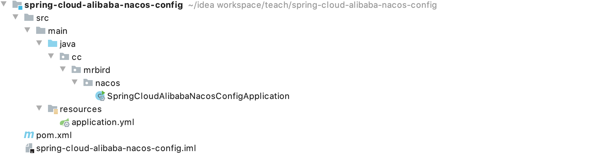
项目的pom内容：
1 |
|
因为这节记录的是Nacos作为配置中心的功能，所以引入的是spring-cloud-alibaba-nacos-config依赖。
基本使用
在项目配置文件application.yml中添加如下配置：
1 | server: |
上面配置指定应用端口为8080，应用名称为my-project。
接着在resources目录下新建配置文件bootstrap.yml，在里面添加如下Nacos config配置（必须在bootstrap.yml中配置，bootstrap.yml优先级比application.yml高）：
1 | spring: |
spring.cloud.nacos.config.server-addr配置了Nacos配置中心的地址，也可以通过spring.cloud.nacos.server-addr指定，它们两个是等价的；spring.cloud.nacos.config.file-extension指定待会在Nacos配置中心读取的配置的格式为yaml格式。
我们回到Nacos控制台http://localhost:8848/nacos，在配置列表中新建一个配置：
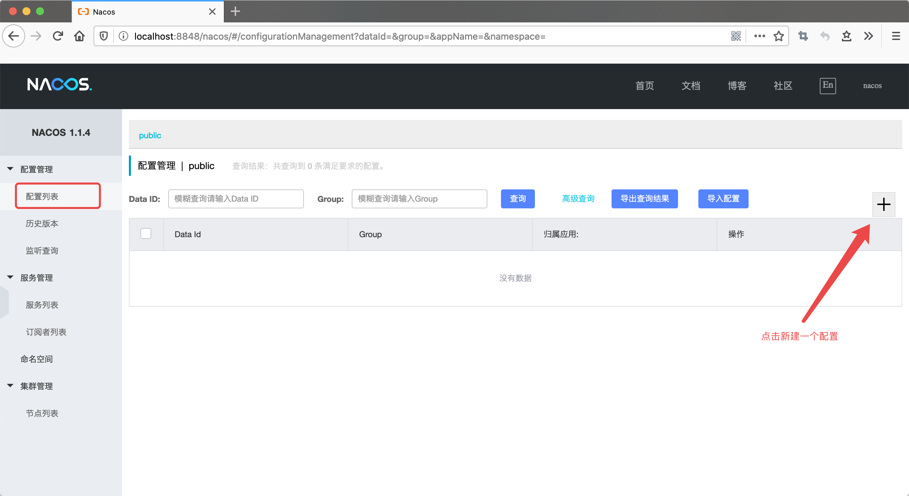
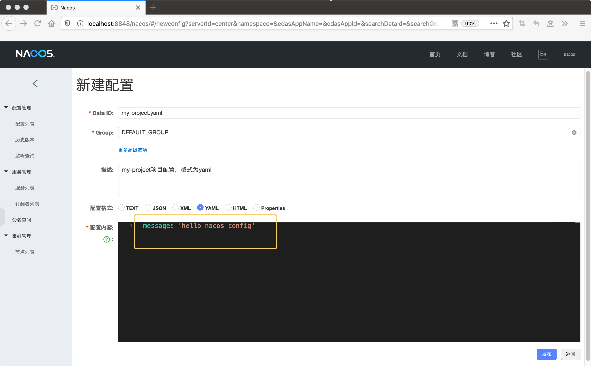
我们新建了一个my-project.yaml配置（dataId为my-project.yaml，group为DEFAULT_GROUP，它们的具体含义下面会介绍到），配置了message: 'hello nacos config'，创建好后，点击发布即可。
接着回到我们的项目，在cc.mrbird.nacos目录下新建controller包，然后在该包下新建TestController用于测试配置获取规则：
1 |
|
上面代码我们从刚刚在Nacos控制台配置的配置文件中获取message配置的值，@RefreshScope用于刷新配置，即我们在Nacos控制台修改了相关配置点击发布后，我们的应用能够在不重启的情况下获取到最新的配置。
启动项目，在浏览器中访问：http://localhost:8080/message：
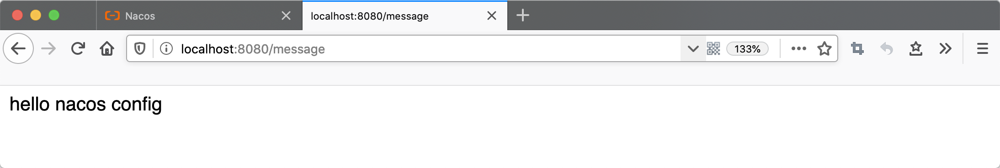
配置获取成功，在Nacos控制台中将message值修改为hello world后发布，再次访问http://localhost:8080/message：
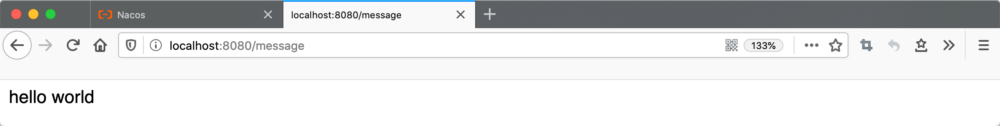
获取配置规则
Nacos配置中心通过namespace、dataId和group来唯一确定一条配置。
- namespace，即命名空间。默认的命名空间为public，我们可以在Nacos控制台中新建命名空间；
dataId，即配置文件名称，dataId的拼接格式如下：
1
${prefix} - ${spring.profiles.active} . ${file-extension}
prefix默认为pring.application.name的值，也可以通过配置项spring.cloud.nacos.config.prefix来配置；spring.profiles.active即为当前环境对应的profile。注意，当spring.profiles.active为空时，对应的连接符-也将不存在，dataId的拼接格式变成${prefix}.${file-extension}；file-extension为配置内容的数据格式，可以通过配置项spring.cloud.nacos.config.file-extension来配置。
group，即配置分组，默认为DEFAULT_GROUP，可以通过
spring.cloud.nacos.config.group配置。
所以根据这些规则，上面示例中我们的应用名称spring.application.name为my-project，spring.cloud.nacos.config.file-extension的值为yaml，没有指定spring.profiles.active，于是dataId为my-project.yaml，分组为默认的DEFAULT_GROUP，命名空间为默认的public。这就是我们在Nacos控制台中新建配置时的根据。
配置划分实战
Nacos配置中心的namespace、dataId和group可以方便灵活地划分配置。比如，我们现在有一个项目需要开发，项目名称为febs，项目开发人员分为两个组：GROUP_A和GROUP_B，项目分为三个环境：开发环境dev、测试环境test和生产环境prod。
假如现在GROUP_A组的组长需要在Nacos中新建一个开发环境的febs项目配置，那么他可以这样做：
- 在Nacos控制台中新建一个名称为febs的命名空间：
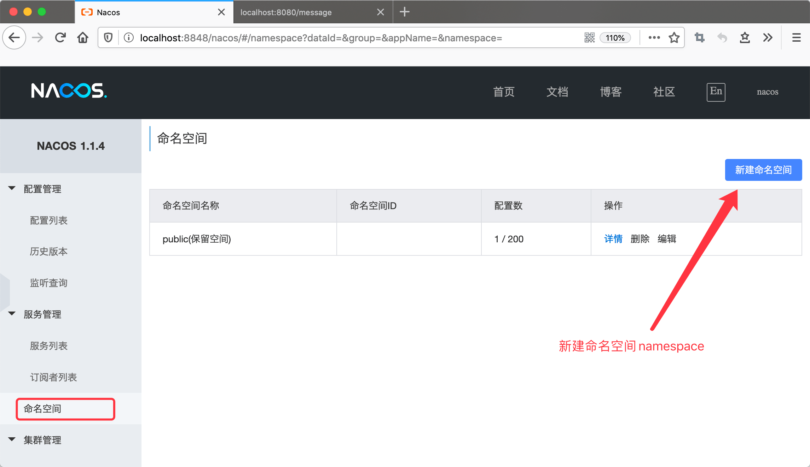
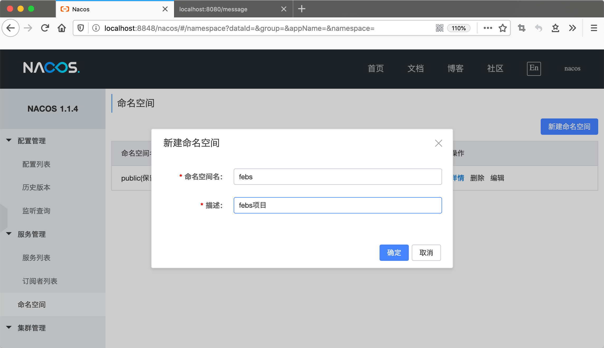
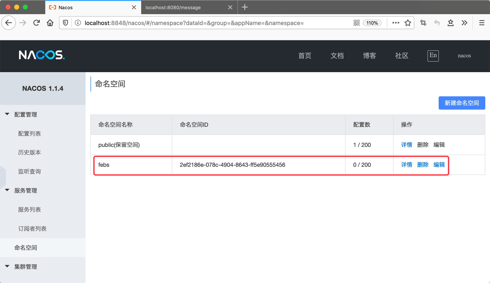
新建febs命名空间后，会生成一个唯一标识该命名空间的命名空间id2ef2186e-078c-4904-8643-ff5e90555456。
- 在Nacos控制台中新建一个配置：
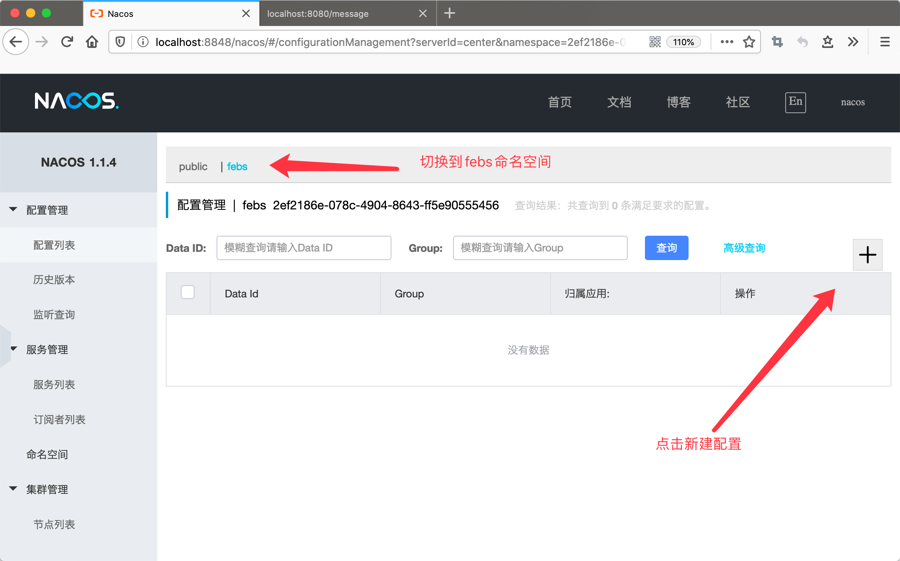
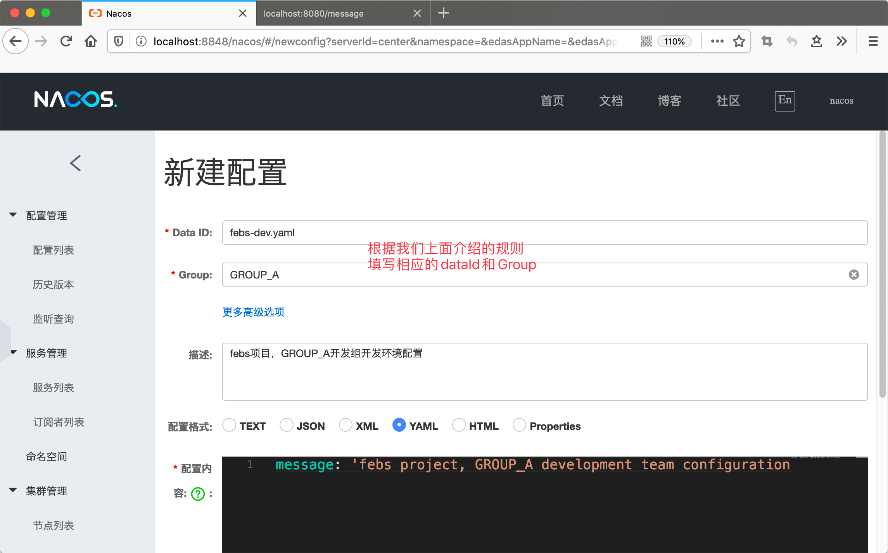
- 最后在febs项目的bootstrap.yml配置文件中添加如下配置即可：
1
2
3
4
5
6
7
8
9
10
11spring:
profiles:
active: dev
cloud:
nacos:
config:
server-addr: localhost:8848
file-extension: yaml
prefix: febs
namespace: '2ef2186e-078c-4904-8643-ff5e90555456'
group: GROUP_A
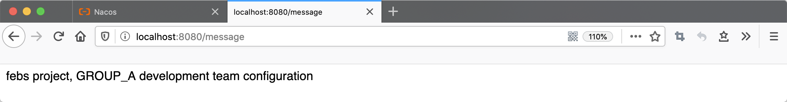
配置回滚
Nacos中，修改配置点击发布后会创建一个对应的历史版本快照，我们可以在Nacos控制台的历史版本列表中找到这些快照：
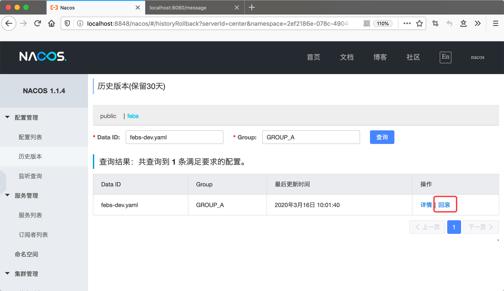
点击回滚按钮即可将配置恢复到指定的版本。
获取多个配置
除了通过上面的方式指定一个唯一配置外，我们还可以同时获取多个配置文件的内容，比如，将项目的bootstrap.yml内容修改为：
1 | spring: |
spring.cloud.nacos.config.extension-configs[n].dataId，指定多个配置的dataId，必须包含文件格式，支持properties、yaml或yml；spring.cloud.nacos.config.extension-configs[n].group，指定分组；spring.cloud.nacos.config.extension-configs[n].refresh，是否支持刷新。
上面的配置中，我们分别从DEFAULT_GROUP中获取了ext-config-one.yaml和ext-config-two.yaml配置内容，并且ext-config-one.yaml支持刷新，ext-config-two.yaml不支持刷新。
我们在Nacos控制台中新建这两个配置：
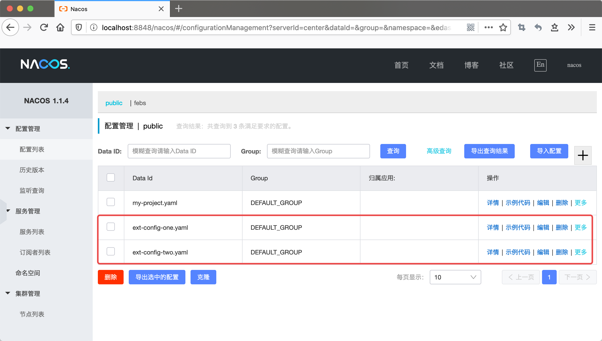
ext-config-one.yaml配置内容：
1 | ext1: 'hello' |
ext-config-two.yaml配置内容：
1 | ext2: 'world' |
在项目的TestController中添加：
1 |
|
启动项目，浏览器访问：http://localhost:8080/multi：
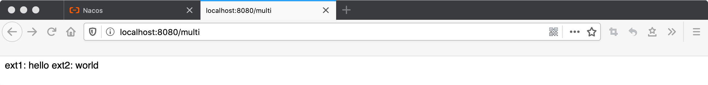
将ext1的值修改为nice，ext2的值修改为job：
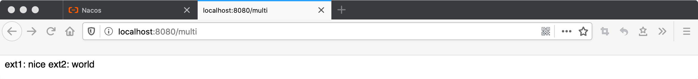
可以看到ext1的值更新了，ext2没有更新。
多配置共享
多配置共享其实和获取多个文件配置作用差不多，下面演示下多配置共享。
将bootstrap.yml配置修改为：
1 | spring: |
spring.cloud.nacos.config.shared-configs指定了共享ext-config-one.yaml和ext-config-two.yaml的配置。
重启项目，访问http://localhost:8080/multi：
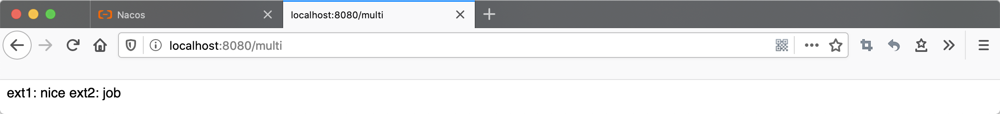
也可以正常获取。
可以看到，无论是多配置共享还是获取多个配置，要完成的事情是一样的，不过它们都有各自的局限性。多配置共享无法指定分组、无法指定命名空间、无法配置是否刷新；获取多个配置相对较为灵活，不过也不能配置命名空间。具体相关的讨论可以参考：https://github.com/alibaba/spring-cloud-alibaba/issues/141
常用配置
| 配置项 | key | 默认值 | 说明 |
|---|---|---|---|
| 服务端地址 | spring.cloud.nacos.config.server-addr | ||
| DataId前缀 | spring.cloud.nacos.config.prefix | spring.application.name | |
| Group | spring.cloud.nacos.config.group | DEFAULT_GROUP | |
| dataID后缀及内容文件格式 | spring.cloud.nacos.config.file-extension | properties | dataId的后缀，同时也是配置内容的文件格式，目前只支持 properties |
| 配置内容的编码方式 | spring.cloud.nacos.config.encode | UTF-8 | 配置的编码 |
| 获取配置的超时时间 | spring.cloud.nacos.config.timeout | 3000 | 单位为 ms |
| 配置的命名空间 | spring.cloud.nacos.config.namespace | 常用场景之一是不同环境的配置的区分隔离，例如开发测试环境和生产环境的资源隔离等。 | |
| AccessKey | spring.cloud.nacos.config.access-key | ||
| SecretKey | spring.cloud.nacos.config.secret-key | ||
| 相对路径 | spring.cloud.nacos.config.context-path | 服务端 API 的相对路径 | |
| 接入点 | spring.cloud.nacos.config.endpoint | 地域的某个服务的入口域名，通过此域名可以动态地拿到服务端地址 | |
| 是否开启监听和自动刷新 | spring.cloud.nacos.config.refresh.enabled | true |
参考链接：
本节源码链接：https://github.com/wuyouzhuguli/SpringAll/tree/master/75.spring-cloud-alibaba-nacos-config。